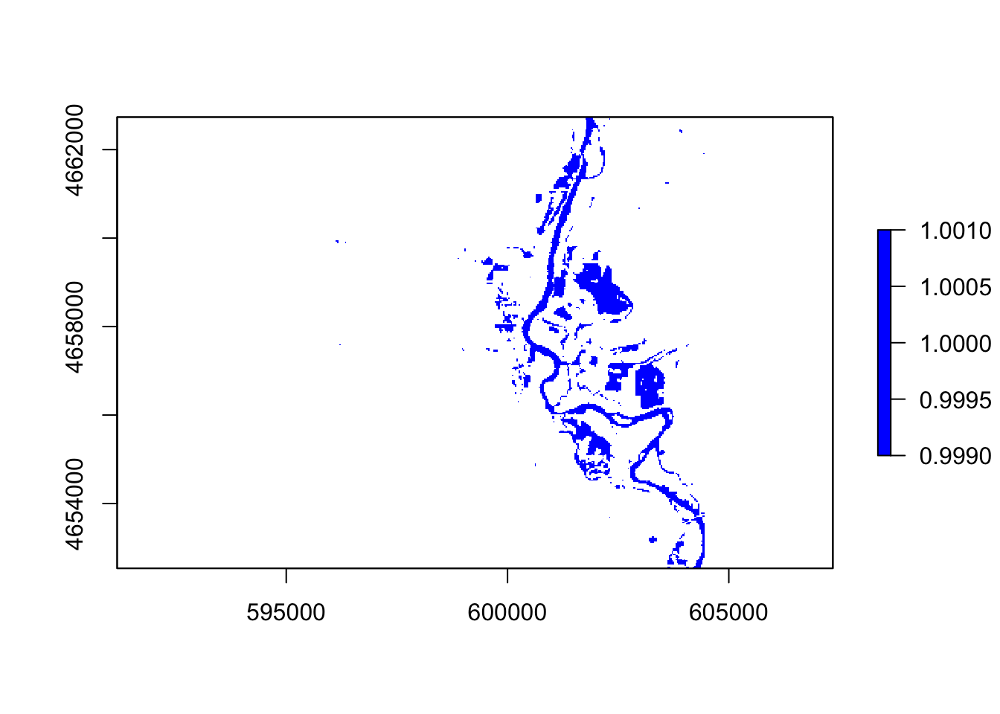

lab5
Xingxin Li
9/4/2020
library(raster)
library(tidyverse)
library(getlandsat)
library(sf)
library(mapview)
library(osmdata)
library(getlandsat)
library(leaflet)
library(rgdal)
library(readr)#Find AOI
#Q1.1
bb = read.csv("/Users/xingxin/Github/geog176a-summer-2020-lab1/uscities.csv") %>%
filter(city == "Palo") %>%
st_as_sf(coords = c("lng","lat"), crs = 4326) %>%
st_transform(5070) %>%
st_buffer(5000) %>%
st_bbox() %>%
st_as_sfc() %>%
st_as_sf()
mapview(bb)#OSM Example
#Q1.2
bwgs = st_transform(bb, 4326)
osm = osmdata::opq(bwgs) %>%
osmdata::add_osm_feature("building") %>%
osmdata::osmdata_sf()
mapview(osm$osm_polygons)#landset discovery space and time
#Q2.1
bbwgs = bb %>% st_transform(4326)
bb = st_bbox(bbwgs)
scenes = lsat_scenes()
down = scenes %>%
filter(min_lat <= bb$ymin, max_lat >= bb$ymax,
min_lon <= bb$xmin, max_lon >= bb$xmax,
as.Date(acquisitionDate) == as.Date("2016-09-26"))
write.csv(down, file = "/Users/xingxin/Github/geog176a-summer-2020-lab1/palo-flood-scene.csv")#Q2.2-2.3
meta = read_csv("/Users/xingxin/Github/geog176a-summer-2020-lab1/palo-flood-scene.csv")
files = lsat_scene_files(meta$download_url) %>%
filter(grepl(paste0("B", 1:6, ".TIF$", collapse = "|"), file)) %>%
arrange(file) %>%
pull(file)
st = sapply(files, lsat_image)
s = stack(st) %>%
setNames(c(paste0("band", 1:6)))
cropper = bbwgs %>%
st_transform(crs(s))
r = crop(s, cropper)#Q3 plotting
par(mfrow = c(2,2))
plotRGB(r, r = 4, g = 2, b = 2, stretch = "lin")
plotRGB(r, r = 5, g = 4, b = 3, stretch = "hist")
dev.off()## null device
## 1#Q4.1 Local Operation
ndvi = (r$band5 - r$band4) / (r$band5 + r$band4)
plot(ndvi)
palette = colorRampPalette(c("blue", "white", "red"))
plot(ndvi, col = palette(6))
#Q4.2 Thresholding
thresholding = function(x){ifelse(x <= 0, 1, NA)}
thresholding(100)## [1] NAthresholding(-100)## [1] 1flood = calc(ndvi, thresholding)
plot(flood, col = "blue")
mapview(flood)